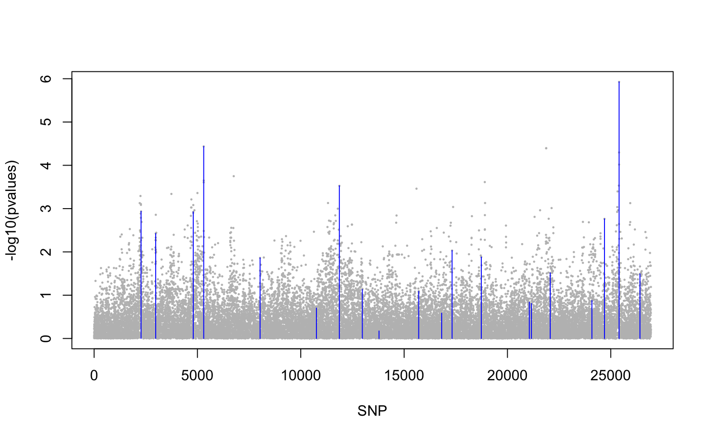

Statistical tests with latent factor mixed models
This function returns significance values for the association between each column of the response matrix, Y, and the explanatory variables, X, including correction for unobserved confounders (latent factors). The test is based on an LFMM fitted with a ridge or lasso penalty.
lfmm_test(Y, X, lfmm, calibrate = "gif")
Arguments
| Y | a response variable matrix with n rows and p columns. Each column is a response variable (numeric). |
|---|---|
| X | an explanatory variable matrix with n rows and d columns. Each column corresponds to an explanatory variable (numeric). |
| lfmm | an object of class |
| calibrate | a character string, "gif" or "median+MAD". If the "gif" option is set (default),
significance values are calibrated by using the genomic control method. Genomic control
uses a robust estimate of the variance of z-scores called "genomic inflation factor".
If the "median+MAD" option is set, the pvalues are calibrated by computing the median and MAD of the zscores. If |
Value
a list with the following attributes:
B the effect size matrix with dimensions p x d.
score a p x d matrix which contains z-scores for each explanatory variable (columns of X),
pvalue a p x d matrix which contains p-values for each explanatory variable,
calibrated.pvalue a p x d matrix which contains calibrated p-values for each explanatory variable,
gif a numeric value for the genomic inflation factor.
Details
The response variable matrix Y and the explanatory variable are centered.
Examples
library(lfmm) ## a GWAS example with Y = SNPs and X = phenotype data(example.data) Y <- example.data$genotype X <- example.data$phenotype ## Fit an LFMM with K = 6 factors mod.lfmm <- lfmm_ridge(Y = Y, X = X, K = 6) <<<<<<< HEAD ## Perform association testing using the fitted model: pv <- lfmm_test(Y = Y, X = X, lfmm = mod.lfmm, calibrate = "gif") ## Manhattan plot with causal loci shown ======= ## Perform association testing using the fitted model: pv <- lfmm_test(Y = Y, X = X, lfmm = mod.lfmm, calibrate = "gif") ## Manhattan plot with causal loci shown >>>>>>> 334de6581f8a3ceeef30ca9a8404c65823dad06c pvalues <- pv$calibrated.pvalue plot(-log10(pvalues), pch = 19, cex = .2, col = "grey", xlab = "SNP")points(example.data$causal.set, -log10(pvalues)[example.data$causal.set], type = "h", col = "blue")## An EWAS example with Y = methylation data and X = exposure Y <- scale(skin.exposure$beta.value) X <- scale(as.numeric(skin.exposure$exposure)) ## Fit an LFMM with 2 latent factors mod.lfmm <- lfmm_ridge(Y = Y, X = X, K = 2) ## Perform association testing using the fitted model: pv <- lfmm_test(Y = Y, X = X, lfmm = mod.lfmm, calibrate = "gif") ## Manhattan plot with true associations shown pvalues <- pv$calibrated.pvalue plot(-log10(pvalues), pch = 19, cex = .3, xlab = "Probe", col = "grey")causal.set <- seq(11, 1496, by = 80) points(causal.set, -log10(pvalues)[causal.set], col = "blue")